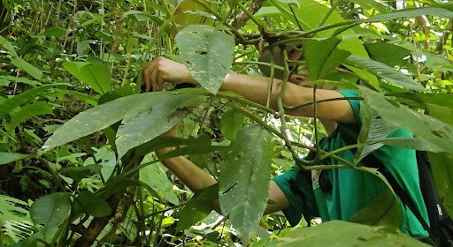

Ecuador, Amazon Rainforest
BioAcoustics Research

This initiative uses AI to analyse bird and sentinel-species vocalisations in the rainforest to monitor ecosystem health and threats such as poaching or illegal logging. Microphones are deployed alongside autonomous AI to listen to the environment and convert sound into data to help protect hidden ecosystems.